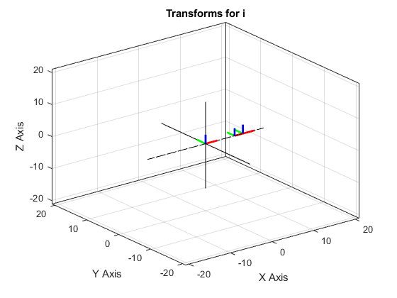
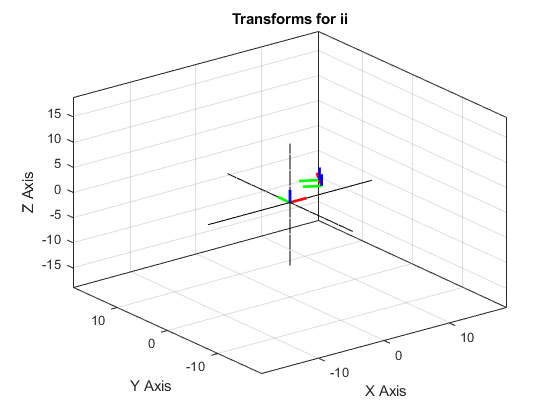
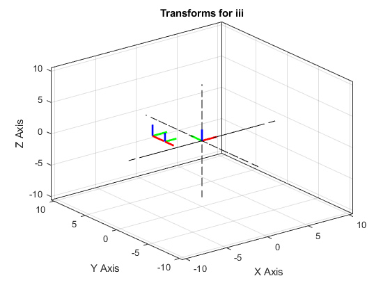
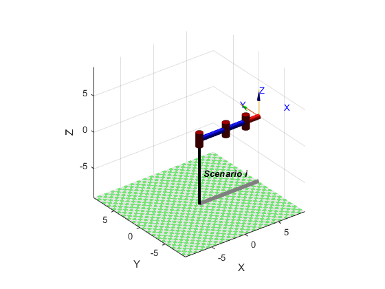
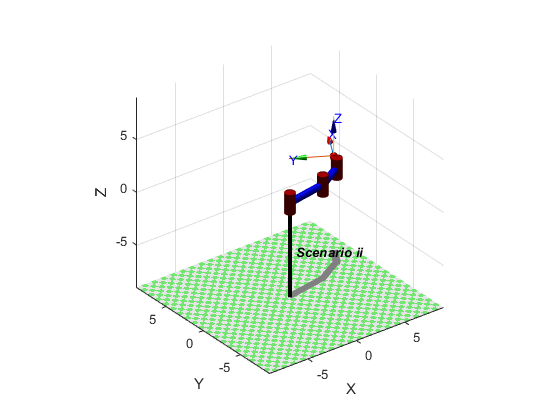
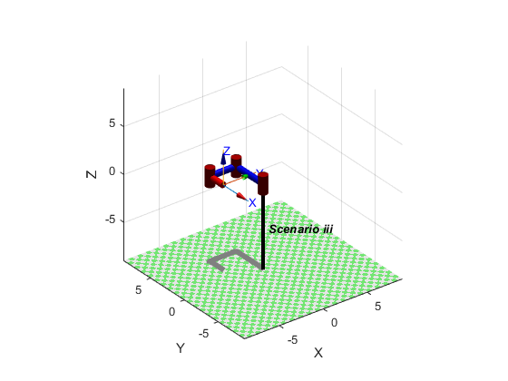

MATLAB_Exercise_1
Michael White 3/26/2021
clear; clc; close all; % PART A % Define symbolic parameters syms theta1 theta2 theta3 L1 L2 L3; % Define link parameter table linkParamTable = ... [0 0 0 theta1; 0 L1 0 theta2; 0 L2 0 theta3]; % PART B % Identify transformation matrices for each link (I will append the % functions I use to the end of this pdf) StepTransforms.Transform_01 = functions.links.Link2Transform(linkParamTable(1,:)); StepTransforms.Transform_12 = functions.links.Link2Transform(linkParamTable(2,:)); StepTransforms.Transform_23 = functions.links.Link2Transform(linkParamTable(3,:)); % The transform to point H requires another row to the parameter table, % which I will append here: linkParamTable(4,:) = [0 L3 0 0]; % Take new row and find appropriate transform: StepTransforms.Transform_3H = functions.links.Link2Transform(linkParamTable(4,:)); % PART C % For this part, I can use symbolic MATLAB in my functions to solve for the % symbolic transforms, then substitute the actual functions with the % replacement symbolics of ci and si with the subs function % Derive the Transform_03 and Transform_0H Transform_03.trig = functions.links.Link2Transform(linkParamTable(1:3,:)); Transform_0H.trig = functions.links.Link2Transform(linkParamTable(1:4,:)); % Convert trig functions to simplified syms syms c1 c2 c3 s1 s2 s3; Transform_03.simple = subs(Transform_03.trig,... [cos(theta1), cos(theta2), cos(theta3),... sin(theta1), sin(theta2), sin(theta3)],... [c1, c2, c3, s1, s2, s3]); Transform_0H.simple = subs(Transform_0H.trig,... [cos(theta1), cos(theta2), cos(theta3),... sin(theta1), sin(theta2), sin(theta3)],... [c1, c2, c3, s1, s2, s3]); % Convert trig combinations from angle sum formula to simplified versions syms c12 c23 s12 s23; Transform_03.simple = subs(Transform_03.simple,... [c1*c2-s1*s2, c2*c3-s2*s3, c1*s2+s1*c2, c2*s3+s2*c3],... [c12, c23, s12, s23]); Transform_0H.simple = subs(Transform_0H.simple,... [c1*c2-s1*s2, c2*c3-s2*s3, c1*s2+s1*c2, c2*s3+s2*c3],... [c12, c23, s12, s23]); % Convert trig combinations from angle sum formula to simplified versions syms c123 s123; Transform_03.simple = subs(Transform_03.simple,... [c3*c12-s3*s12, c3*s12+s3*c12],... [c123, s123]); Transform_0H.simple = subs(Transform_0H.simple,... [c3*c12-s3*s12, c3*s12+s3*c12],... [c123, s123]); % Display results from simplified transforms disp('The simplified transform 03:'); disp(Transform_03.simple); disp('The simplified transform 0H:'); disp(Transform_0H.simple); % Creating quantified transforms for 03 for scenario i, ii, and iii % Also: converting degrees to radians Transform_03.i = subs(Transform_03.trig, ... [theta1, theta2, theta3, L1, L2, L3], [0 0 0 4 3 2]); Transform_03.ii = subs(Transform_03.trig, ... [theta1, theta2, theta3, L1, L2, L3], [pi*10/180 pi*20/180 pi*30/180 4 3 2]); Transform_03.iii = subs(Transform_03.trig, ... [theta1, theta2, theta3, L1, L2, L3], [pi/2 pi/2 pi/2 4 3 2]); % Creating quantified transforms for 0H for scenario i, ii, and iii Transform_0H.i = subs(Transform_0H.trig, ... [theta1, theta2, theta3, L1, L2, L3], [0 0 0 4 3 2]); Transform_0H.ii = subs(Transform_0H.trig, ... [theta1, theta2, theta3, L1, L2, L3], [pi*10/180 pi*20/180 pi*30/180 4 3 2]); Transform_0H.iii = subs(Transform_0H.trig, ... [theta1, theta2, theta3, L1, L2, L3], [pi/2 pi/2 pi/2 4 3 2]); % Display results for i, ii, and iii disp('The Transforms for i'); disp(Transform_03.i); disp(Transform_0H.i); disp('The Transforms for ii'); disp(Transform_03.ii); disp(Transform_0H.ii); disp('The Transforms for iii'); disp(Transform_03.iii); disp(Transform_0H.iii); % Plot the 03 and 0H transforms for i functions.visual.plotTransform(double(Transform_03.i),1); functions.visual.plotTransform(double(Transform_0H.i),1); title('Transforms for i'); % Plot the 03 and 0H transforms for ii functions.visual.plotTransform(double(Transform_03.ii),2); functions.visual.plotTransform(double(Transform_0H.ii),2); title('Transforms for ii'); % Plot the 03 and 0H transforms for iii functions.visual.plotTransform(double(Transform_03.iii),3); functions.visual.plotTransform(double(Transform_0H.iii),3); title('Transforms for iii'); % PART D: Testing with Corke (compare these to my 3d plots) % Scenario i L01_i = Link('d',0,'a',0,'alpha',0); L12_i = Link('d',0,'a',4,'alpha',0); L23_i = Link('d',0,'a',3,'alpha',0); L3H_i = Link('d',0,'a',2,'alpha',0); bot_i = SerialLink([L01_i L12_i L23_i L3H_i],'name','Scenario i'); figure; bot_i.plot([0 0 0 0]); %Looks good! % Scenario ii L01_ii = Link('d',0,'a',0,'alpha',0); L12_ii = Link('d',0,'a',4,'alpha',0); L23_ii = Link('d',0,'a',3,'alpha',0); L3H_ii = Link('d',0,'a',2,'alpha',0); bot_ii = SerialLink([L01_ii L12_ii L23_ii L3H_ii],'name','Scenario ii'); figure; bot_ii.plot([0 pi/180*10 pi/180*20 pi/180*30]); %Looks good! % Scenario iii L01_iii = Link('d',0,'a',0,'alpha',0); L12_iii = Link('d',0,'a',4,'alpha',0); L23_iii = Link('d',0,'a',3,'alpha',0); L3H_iii = Link('d',0,'a',2,'alpha',0); bot_iii = SerialLink([L01_iii L12_iii L23_iii L3H_iii],'name','Scenario iii'); figure; bot_iii.plot([0 pi/2 pi/2 pi/2]); %Looks good!
The simplified transform 03: [c123, -s123, 0, L1*c1 + L2*c12] [s123, c123, 0, L1*s1 + L2*s12] [ 0, 0, 1, 0] [ 0, 0, 0, 1] The simplified transform 0H: [c123, -s123, 0, L1*c1 + L2*c12 + L3*c123] [s123, c123, 0, L1*s1 + L2*s12 + L3*s123] [ 0, 0, 1, 0] [ 0, 0, 0, 1] The Transforms for i [1, 0, 0, 7] [0, 1, 0, 0] [0, 0, 1, 0] [0, 0, 0, 1] [1, 0, 0, 9] [0, 1, 0, 0] [0, 0, 1, 0] [0, 0, 0, 1] The Transforms for ii [(3^(1/2)*(cos(pi/9)*cos(pi/18) - sin(pi/9)*sin(pi/18)))/2 - (cos(pi/9)*sin(pi/18))/2 - (cos(pi/18)*sin(pi/9))/2, (sin(pi/9)*sin(pi/18))/2 - (cos(pi/9)*cos(pi/18))/2 - (3^(1/2)*(cos(pi/9)*sin(pi/18) + cos(pi/18)*sin(pi/9)))/2, 0, 4*cos(pi/18) + 3*cos(pi/9)*cos(pi/18) - 3*sin(pi/9)*sin(pi/18)] [(3^(1/2)*(cos(pi/9)*sin(pi/18) + cos(pi/18)*sin(pi/9)))/2 + (cos(pi/9)*cos(pi/18))/2 - (sin(pi/9)*sin(pi/18))/2, (3^(1/2)*(cos(pi/9)*cos(pi/18) - sin(pi/9)*sin(pi/18)))/2 - (cos(pi/9)*sin(pi/18))/2 - (cos(pi/18)*sin(pi/9))/2, 0, 4*sin(pi/18) + 3*cos(pi/9)*sin(pi/18) + 3*cos(pi/18)*sin(pi/9)] [ 0, 0, 1, 0] [ 0, 0, 0, 1] [(3^(1/2)*(cos(pi/9)*cos(pi/18) - sin(pi/9)*sin(pi/18)))/2 - (cos(pi/9)*sin(pi/18))/2 - (cos(pi/18)*sin(pi/9))/2, (sin(pi/9)*sin(pi/18))/2 - (cos(pi/9)*cos(pi/18))/2 - (3^(1/2)*(cos(pi/9)*sin(pi/18) + cos(pi/18)*sin(pi/9)))/2, 0, 4*cos(pi/18) + 3^(1/2)*(cos(pi/9)*cos(pi/18) - sin(pi/9)*sin(pi/18)) + 3*cos(pi/9)*cos(pi/18) - cos(pi/9)*sin(pi/18) - cos(pi/18)*sin(pi/9) - 3*sin(pi/9)*sin(pi/18)] [(3^(1/2)*(cos(pi/9)*sin(pi/18) + cos(pi/18)*sin(pi/9)))/2 + (cos(pi/9)*cos(pi/18))/2 - (sin(pi/9)*sin(pi/18))/2, (3^(1/2)*(cos(pi/9)*cos(pi/18) - sin(pi/9)*sin(pi/18)))/2 - (cos(pi/9)*sin(pi/18))/2 - (cos(pi/18)*sin(pi/9))/2, 0, 4*sin(pi/18) + 3^(1/2)*(cos(pi/9)*sin(pi/18) + cos(pi/18)*sin(pi/9)) + cos(pi/9)*cos(pi/18) + 3*cos(pi/9)*sin(pi/18) + 3*cos(pi/18)*sin(pi/9) - sin(pi/9)*sin(pi/18)] [ 0, 0, 1, 0] [ 0, 0, 0, 1] The Transforms for iii [ 0, 1, 0, -3] [-1, 0, 0, 4] [ 0, 0, 1, 0] [ 0, 0, 0, 1] [ 0, 1, 0, -3] [-1, 0, 0, 2] [ 0, 0, 1, 0] [ 0, 0, 0, 1]     